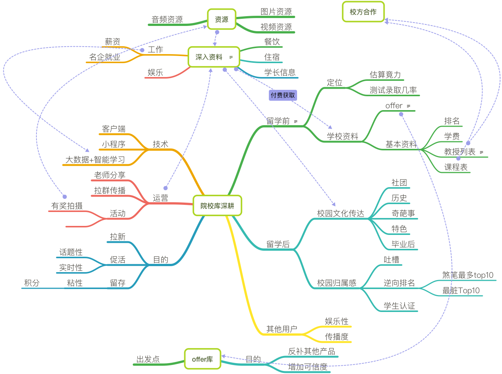
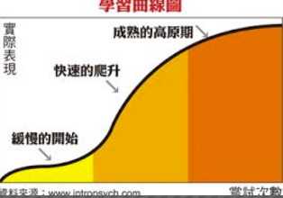
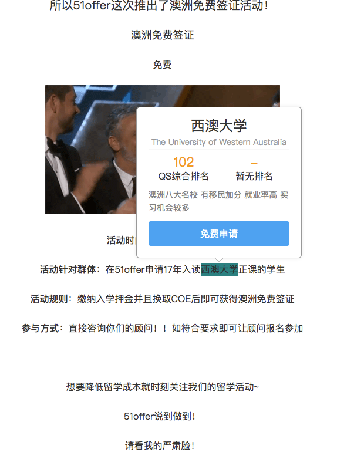
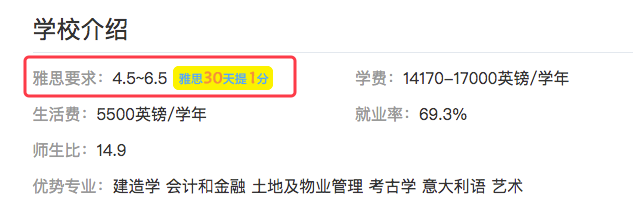

概述
院校库作为每个留学公司都拥有的产品，其目的为大都以学校基本数据为主，强调数据的及时以及详尽，目的为增加信任、提供资源线索入口。
但是目前院校产品同质化严重，各家留学公司都以大而全为唯一目的，导致同质化严重，所以我们需要sz找寻差异化。
实现差异化的前提永远不是为了差异而差异。需要结合场景与用户画像进行梳理。
存在的问题
数据不足
行业对比，Zinch等知名网站的院校库产品都有极为庞大的维护团队，无论从数据的完整性，及时性都是有着很大的不足。运营支持欠缺
尽量以技术，产品等观点弥补运营数据，促进用户UGC。内部支持欠缺，对业务不了解
各开发及测试人员与一线业务人员积极沟通，加深业务的理解
本篇从场景以及用户画像角度场梳理实现的逻辑，以及如何结合RN、App、小程序的入口进行开发的流程
思维导图
上图可以看出目前院校库其实有很多的点可以深度挖掘。

用户特点及需求分析
留学前用户
这部分用户主要为刚刚萌生留学想法的学生及家长。
此部分用户具体又能分为几个阶段，每个阶段的持续时间符合抛物线，用户从小白进步到中等能力需要的时间是几何上升的，初期非常快的过度，在中期停留时间最长，最后实施的时候成熟期比较平缓。

1. 留学前-小白
此阶段的人群对留学完全无知，仅仅只有想要留学的想法，主要需求:范围获取信息。
这个阶段维持时间一般不会太长，预计为1-2周。
需要了解所有关心的信息。这阶段的信息获取一般是概念上的东西，一般为：
- 要去哪个国家
- 留学平均费用
- 就业机会
2. 留学前——中
此阶段对基本信息有一定的了解，以确定了目标国家，需求转变为具体信息的获取上，同时也会对自身与目标院校的匹配产生思考，对自己进行定位的需求相应增加，此时应该关心的为
- 学校排名
- 某学校专业排名，专业优势，导师情况
- 自身定位
- 录取几率
- 竟力排行
- 目标国家信息：人文，费用等
3. 留学前——中后
此阶段的用户已经明确了具体学校，了解自己应该朝哪个方向努力并着手提升背景，此时更关注信息的深度，同时需要了解一些学校周边信息，渴望与目标的接触。
目标学校深度信息
- 学校周边信息，
衣、食、住、行 - 学校文化——内部消息，社团排名，奇葩事，历史名人
- 学校周边信息，
提升背景——此时已经开始按照一定方向规划自己的留学进度
- 刷GPA
- 语言考试。
目标接触
- 建立该校学生，毕业生，教授的联系
4. 留学前——专家(伪)
这种一知半解的时期最容易滋生吹牛逼心态，所以也有了诉说了解的信息的渴望，希望更具有专业度的讨论，而不是独自查询。
小结
根据以上归纳得知
小白用户的留存率一般很低，需要配合知识的专业度吸引他们，同时资料的专业程度不一定是他们的首选，因为他们对知识是否详尽没有具体 的概念，但是对
概念性的东西需求较大.结论：院校产品对他们的影响不大，这个阶段一般汲取的知识为概念性的，想拉这部分用户，应该跟资讯类、搜索类、百科类产品合 作，提供给他们接口做关联引流。
中期用户是院校产品的
目标用户，他们需要广泛了解所有院校，所以院校排名，基本信息需求高。由于我们资料的完整度无法与Zinch等专业院校产品比较，所以要使用技术与产品手段实现内容差异化。结论:目标用户对所有院校的需求高，从各个维度（某专业，某国，某城市）进行学校排名，满足他们对院校横向比较的需求。基本信息的需求也较高，这部分采取
激励政策发动用户自发编辑内容，此部分内容需要留存专家用户去制作。中后期用户，他们要求的内容比较实质，一般是指单独学校信息的深入度，这里一种是
静态资料，第二种是来自学校内部声音。
静态资料的完整性，这部分采取奖励政策发动用户自发编辑内容，此部分内容需要留存专家用户去制作。结论：这部分用户对内容需求提高，需要的是
深度资料，与专业论坛的交流专家型用户，这部分人群的诉求比较特殊，他们基本已经找到留学机构开始办理，或者已经踏上diy之旅。这部分人群大部分精力已经在具体的流程中。在空闲之余他们也有表达的诉求，
装逼属性及激励政策对他们格外重要。而他们产生的内容恰恰是最吸引其他3个阶段用户的地方。
场景
根据上面的归纳总结出以下几种用户的使用场景
小白用户
刚下定决心去留学，什么都不知道呢，先去查查吧。于是就开始了搜索和提问之旅，搜的词汇大多是“怎么出国留学”，“出国留学流程”，“哪个国家留学好”，“我这水平够上什么大学”。一堆乱糟糟的回答精品就在其中，漫长筛选出有用的知识点。
偶尔也去论坛看看大家都讨论什么内容，一进去发现满眼的专业词汇一脸懵圈。还是先混混基础板块。
中期用户
进入院校库，查找各种榜单，从多维度进行排序。会打开榜单前几名查看明细；学费、历年录取线等基本内容是其重点考虑的方向。
中后期
已经圈定了几所学校的具体专业，准备深入了解。一些付费获深入资料的产品会吸引他们。
信息提炼
- 留学小白需要引导，想办法从其他入口导入院校产品是重点运营的地方。可以通过攻略软文的推荐，留学资讯类带学校的超链等方式。
 中后期用户选择好目的地，此时他们对院校产品关注度较高。
- 学校基本资料重点突出——学费，录取几率测试, 就业
- 排名可以单独出一个与院校库并列的一级入口，二级入口分为：
- 权威排行——QS，USNews,Times,
- 多样排行——课业最繁忙，最土豪，收费最高，住宿最好。
- 定制化的收费服务可以按照国家或者风格分类，每类50-100元左右，学生可以深入了解对应国家的信息。这类付费用户既产生了消费，又可以看做
优质资源进行留学全案产品的转化。信息内容包括并不限于：- 海外留学生采风视频
- 芥末内部留学讲座资料
- 活动资格
- 周边礼品
针对后期及留学后用户，院校信息补全有偿采纳，内容贡献奖赏，类似你好网的（我评我校）
产品设计
这一步就是如何把场景以及痛点成产品的具体实现中。
总结出如下功能。
- 资讯引导院校入口，院校底部联想资讯。
- 权威排行，多样排行
- VIP专区（深入资料，1:1 咨询）
- 增加补全信息系统
- 用户中心增加余额积分，关联积分商城。
官网：
- 院校库增加院校库排行一级入口
- 院校库排行包含两个区块
- 院校cell内容增加，标签化展示排名，点击跳入排行榜，并定位当前院校
- 院校对比功能——如汽车之家车辆对比
- 录取需求可以关联自主产品

App:用户粘性与拉新目的并存，需同时兼具可玩性与工具属性保证留存
- 积分商城与积分等级图标：与运营部策划的积分商城共用一套系统。
- 院校信息有偿补全:被采纳的编辑人信息会显示在院校库展示页内。例：此部分信息来源于——xxx
- 谈校风声：合并一个大版本，不单独把学校分类。针对具体院校发表评述性文章，Level5以上专家用户，支持内容打赏。此功能需要比较强大的输入功能，手机实现比较适合markdown。
小程序: 无需留存，直命痛点。多数场景为咨询过程,老师直接发送。
院校库:
- 信息与品牌暴露为主，传播度
- 重工具属性，轻社交，轻业务:减少信息采集，在用户操作场景流程中尽量减少对用户的干扰。
- 搜索
- 筛选
- 院校对比
- 测试录取几率
- 合理利用模板消息推送及webSocket——不限于本项目。
ps小程序申请流程可以利用微信进行更好的传播。